Getting Started
This section will guide you in setting up your new Annikken Andee shield for your Arduino projects.
If you have just gotten your Annikken Andee shield, go through each step to ensure a smooth setup or you can skip to the relevant topic if you already have completed some of it.
If you come across any issues, please check our support page for your relevant product. If the solution is not available there, feel free to contact us.
Installing Arduino IDE
Coding for Arduino and Annikken Andee is done using the Arduino Integrated Development Environment(IDE). Before you proceed, you should ensure that you have the Arduino IDE installed on your computer.
If the Arduino IDE is not installed, proceed to download the Arduino IDE at Arduino. Just get the latest version.
Installing Andee Library
The Annikken Andee Library can be easily installed by using Arduino IDE's built-in library manager. Follow these steps to install the Andee Library.
- In your Arduino IDE, select Sketch >> Include Library >> Manage Libraries.
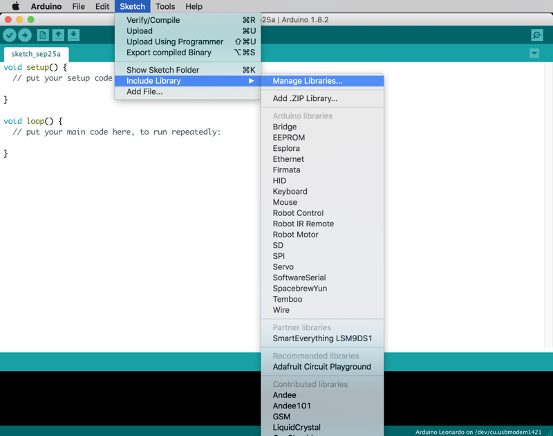
- Filter the library search by typing "andee" into the search box in the top right corner.

- Select the latest version from the drop down menu and hit install.
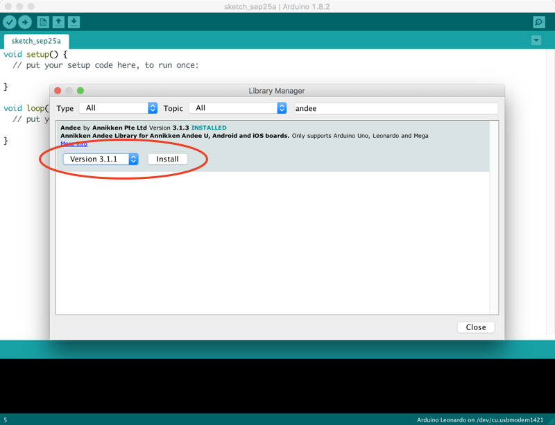
Installing Andee Firmware
Annikken regularly releases new firmware updates for the Andee U, iOS and Android. It is recommended that you update the firmware on your shield when a new update is released. To do so, you require the following items:
- 1x Micro SD Card.
- 1x Micro SD Card Reader/Writer (or a computer capable of reading/writing Micro SD Cards).
- 1x Arduino Board.
- 1x Annikken Andee U/iOS/Android shield.
Andee U/Android
This section provides instructions for firmware installation/upgrade for Annikken Andee U and Andee Android shields. Please follow the steps:
-
Download the latest firmware for your Andee shield listed below.
-
Extract the zip file and copy "image.hex" into your Micro SD card.
-
Connect the Annikken Andee to the Arduino and power it up. You should see an LED blinking. The Andee is in "Normal Mode".
-
We will now need to put the Andee into "Update Mode". Press and hold down the "BOOT" and "ANDEE RESET" buttons together. Don’t let go of them yet!
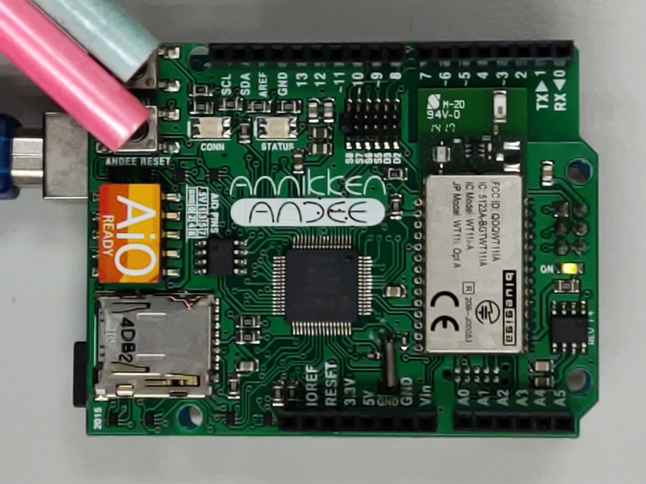
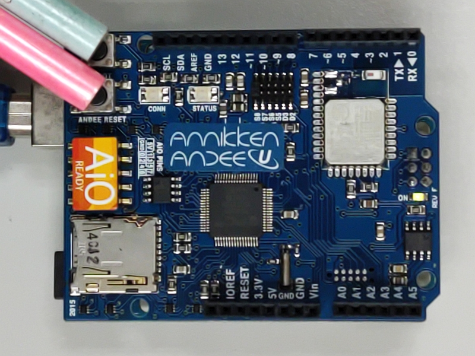
-
While still holding down the "BOOT" button, release the "ANDEE RESET" button. You should see that "CONN" and "STATUS" LEDS are now flashing RED together.
-
Now let go of the "BOOT" button.
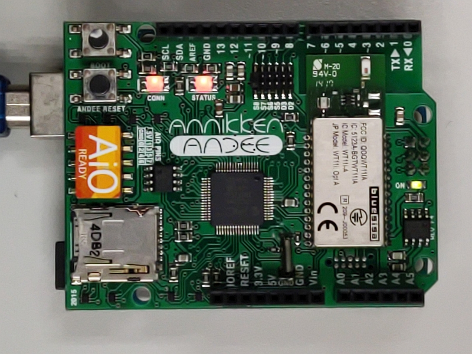
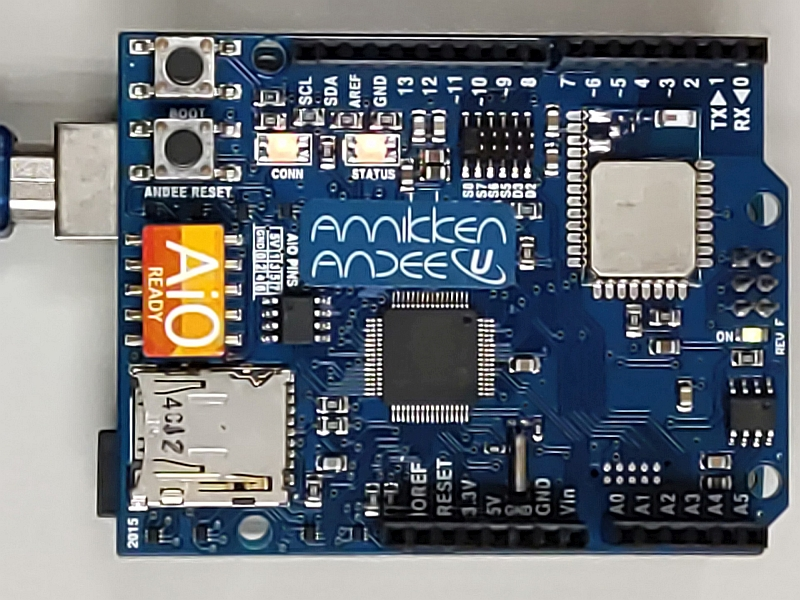
-
Insert the Micro SD card containing "image.hex" you loaded earlier into the Annikken Andee's SD card slot. Annikken Andee will automatically start updating. The LEDs will flash red and green consecutively. Do not power down the shield at this time.
-
Once the update/installation has completed, the "CONN" and "STATUS" LEDs will start to blink green again.
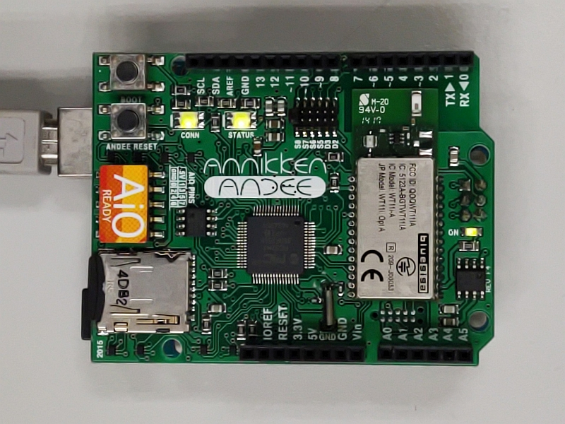
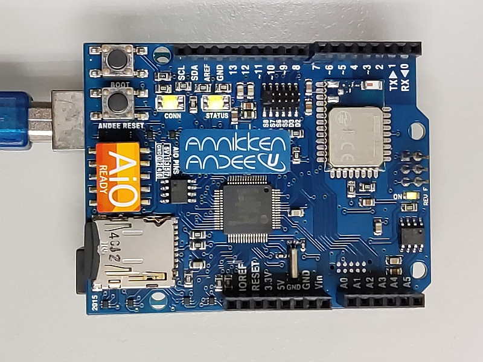
You're done! Your Annikken Andee Shield is now updated with the latest firmware!
Andee iOS
This section provides instructions for firmware installation/upgrade for Annikken Andee iOS shields. Please follow the steps:
-
Download the latest firmware for Andee iOS here.
-
Extract the zip file and copy "image.hex" into your Micro SD card.
-
Connect the Annikken Andee to the Arduino and power it up. You should see an LED blinking. The Andee is in "Normal Mode".
-
We will now need to put the Andee into "Update Mode". Press and hold down the "BTN_0" and "BTN_1" buttons together. Don’t let go of them yet!
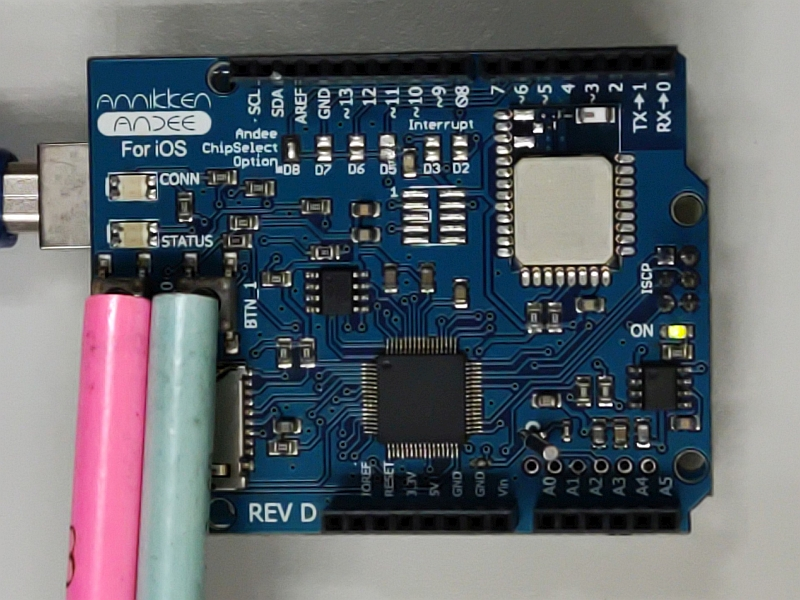
-
While still holding down the "BTN_1" button, release the "BTN_0" button. You should see that "CONN" and "STATUS" LEDS are now flashing RED together.
-
Now let go of the "BTN_1" button.
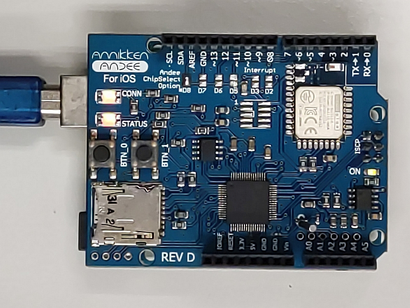
-
Insert Micro SD card containing "image.hex" you loaded earlier into the Annikken Andee's SD card slot. Annikken Andee will automatically start updating. The LEDs will flash red and green consecutively. Do not power down the shield at this time.
-
Once the update/installation has completed, the "CONN" and "STATUS" LEDs will start to blink green again.
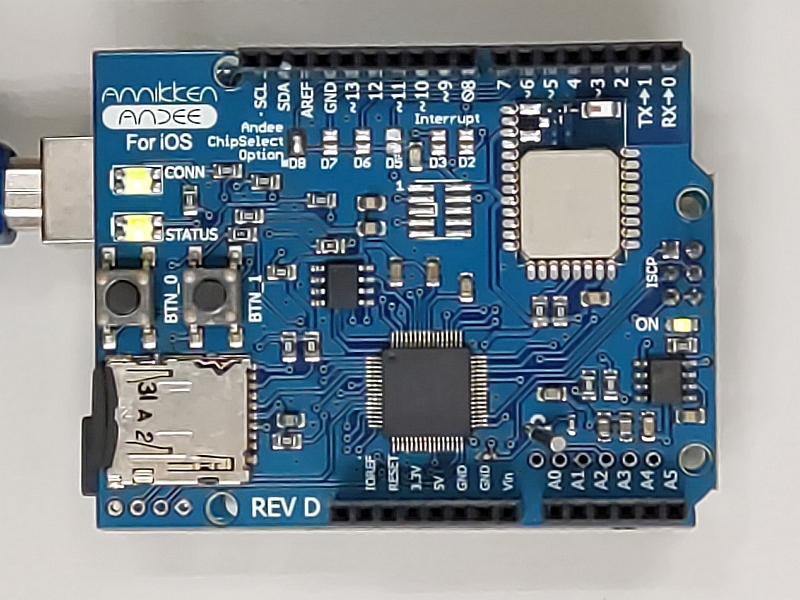
You're done! Your Annikken Andee iOS shield is now updated with the latest firmware!